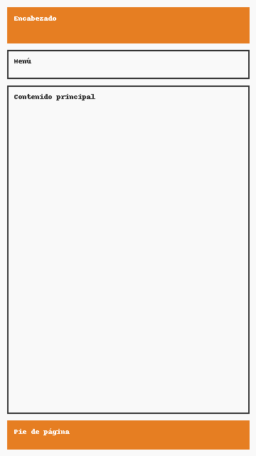
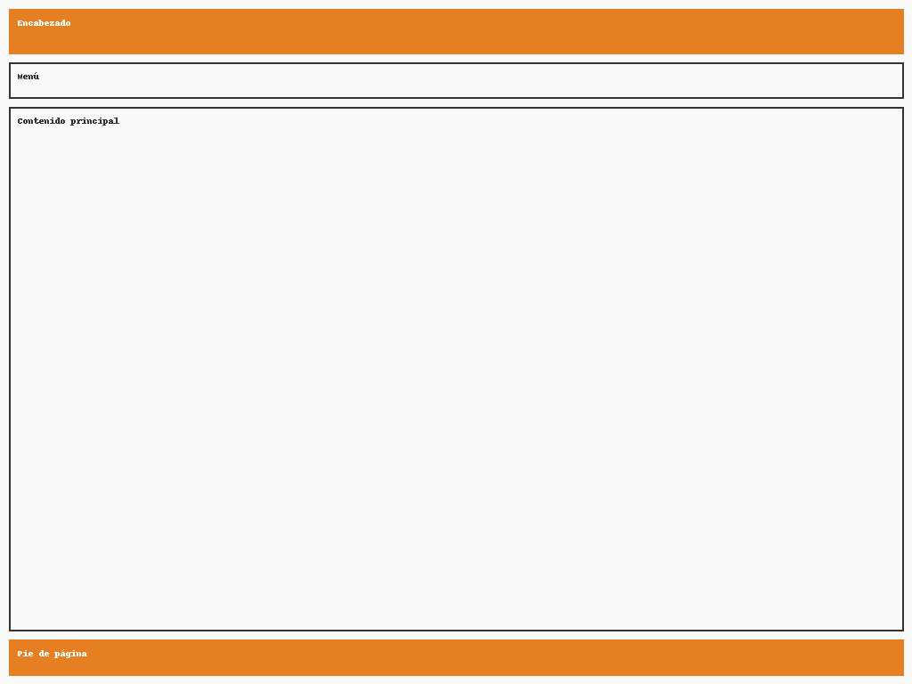

Site Name
Cooking Recipes RD
A site dedicated to sharing easy, delicious, and quick recipes for any occasion.
Suggested domain: recetasrd.com
Site Purpose
The purpose of this site is to provide a collection of recipes organized by type (breakfast, lunch, dinner, and desserts), each with ingredients, preparation steps, and illustrative images. Interactive features will also be included, such as showing/hiding ingredients, saving favorite recipes, and filtering by category using JavaScript.
Scenarios
- What easy recipes can I prepare for breakfast?
- How can I see only dessert recipes?
- What ingredients do I need to prepare a specific recipe?
Color Scheme
The colors were selected to convey warmth and appetite:
- Orange (#E67E22) – used in headers, buttons, and accents.
- Light background (#F9F9F9) – used as general background color.
- Dark gray (#333) – for main text.
Typography
- Montserrat: used for titles and headings.
- Open Sans: used for body text and descriptions.
Wireframe Diagram
Below are simple sketches of the proposed homepage design:
Mobile View

Desktop View
